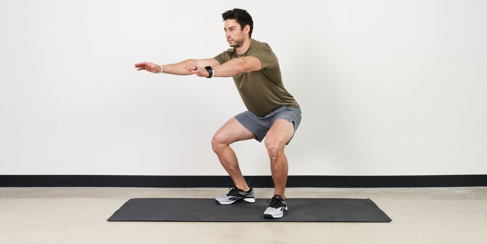
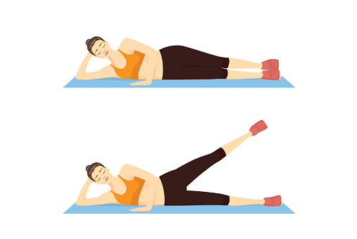
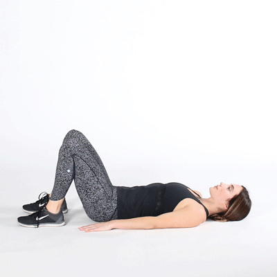
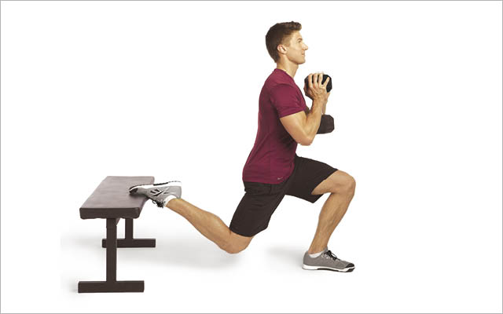

LEG Exercises
Exercise 1: Squats

Squats are a fundamental lower body exercise that strengthens hips,
glutes, quads, and hamstrings.
- Stand with feet wider than hip-width apart, toes facing front.
- Drive hips back, knees bend slightly outward.
- Keep heels down, chest up, and lower until thighs are parallel.
- Press through heels and return to standing.
Exercise 2: Side-Lying Left Leg Lift

This bodyweight move targets your hips, glutes, hamstrings, and lower
back.
- Lie on your right side with legs stacked and extended.
- Support your head with your right arm, left hand on hip.
- Exhale and raise your left leg until you feel tension.
- Lower back slowly and repeat 10–12 reps.
Exercise 3: Walking Lunges
This move challenges balance and works quads, hamstrings, and glutes.
- Start standing, feet together, holding dumbbells if needed.
- Step forward with right leg into a lunge.
- Push up and bring legs together again.
- Repeat on the left leg and continue walking forward.
Exercise 4: Glute Bridge

A great exercise to activate glutes and strengthen your posterior chain
using only body weight.
- Lie on your back with knees bent and feet flat.
- Press into your heels and lift hips toward ceiling.
- Pause at the top, then lower with control.
Exercise 5: Goblet Squat
An easier variation of barbell squats that still targets quads and
glutes effectively.
- Hold a dumbbell vertically close to your chest.
-
Lower into a squat, keeping the dumbbell in contact with your body.
- Push through heels and return to standing.
Exercise 6: Bulgarian Split Squat

This unilateral move builds strength and balance by isolating one leg at
a time.
-
Place one foot on a bench behind you and hold weight at your chest.
- Lower into a lunge, keeping shoulders above hips.
- Push through the front heel to return to standing.
- Repeat on both sides.